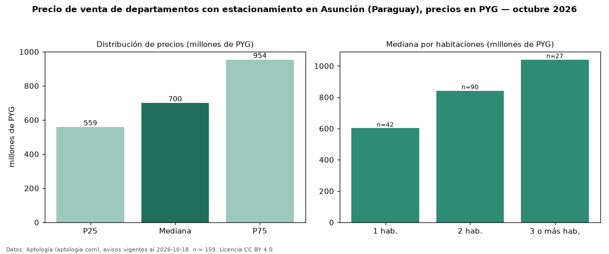

Precio de venta de departamentos con estacionamiento en Asunción (Paraguay), precios en PYG — octubre 2026
PYG 700 millones es el precio mediano de departamentos con estacionamiento en venta en Asunción (Paraguay) (n = 159 avisos). Eso es 9 % más que la mediana de todos los departamentos en venta de Asunción (PYG 640 millones, n = 455); este segmento reúne el 35 % de esos avisos. Por metro cuadrado, la mediana es PYG 8,93 millones/m² (n = 147), 7 % por encima del conjunto de referencia (PYG 8,33 millones/m²). El área mediana anunciada es 83 m². El segmento con más oferta es el de 2 habitaciones (90 avisos, mediana PYG 842 millones); pasar de 1 habitación a 3 o más habitaciones cambia la mediana +73 %. La mitad central de los avisos va de PYG 559 millones a PYG 954 millones (razón 1,7), una dispersión moderada. Datos: Aptología (aptologia.com), CC BY 4.0 — https://www.aptologia.com/py/venta/asuncion. Archivos: PDF, CSV con las cifras y gráfica PNG.

| Avisos únicos | 159 |
|---|---|
| Percentil 25 | COP 558.775.000 |
| Mediana | COP 700.000.000 |
| Percentil 75 | COP 953.800.000 |
| Mediana por m² | COP 8.933.333 |
Fuente: avisos vigentes de portales inmobiliarios recopilados por Aptología, deduplicados (mínimo 30 avisos únicos por celda). Precios pedidos, no cerrados. Fecha: 2026-10-18.